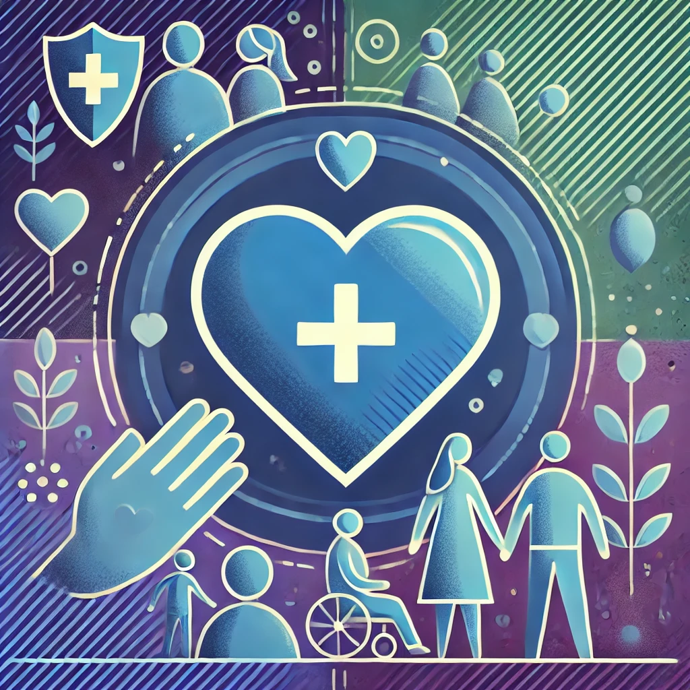
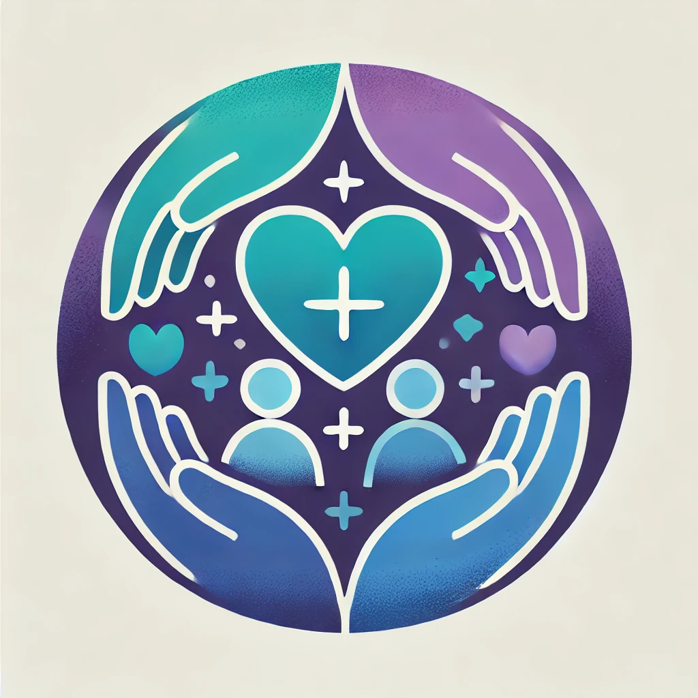

Safeguarding Cornwall
"Caring Together:Guidance and Referrals for a Safer Community"

Safeguarding
Safeguarding is a collective responsibility, to learn more please click below.
Click here

Safeguarding
Safeguarding is the practice of protecting individuals health, well-being, and human rights, ensuring they live free from harm, abuse, and neglect. It is especially crucial for children, young people, and vulnerable adults.
- Protection from Abuse and Maltreatment: Safeguarding involves taking steps to prevent and respond to abuse, whether physical, emotional, sexual, or neglect.
- Promoting Welfare: It includes promoting the overall well-being of individuals, ensuring their health and development are supported.
- Preventing Harm: Safeguarding aims to prevent harm to individuals health and development by identifying and addressing potential risks early.
- Empowerment: Ensuring that individuals are supported to make their own decisions and give informed consent.
- Partnership: Working collaboratively with other organizations and agencies to provide comprehensive support and protection.
Safeguarding is a collective responsibility
Click for more information.Signs to lookout for
Spotting signs that someone is in need of extra support can be hard, but we are here to support you. You may recognise these in yourself or others, please do not be afraid to reach out.
- Physical Abuse: Frequent injuries, unexplained bruises, or fear of going home.
- Emotional Abuse: Excessive withdrawal, anxiety, or extreme behavior changes.
- Neglect: Poor hygiene, frequent hunger, or lack of medical care.
- Sexual Abuse: Knowledge of sexual acts inappropriate for their age, STIs, or fear of a specific person.
- Bullying: Reluctance to go to school, unexplained injuries, or lost possessions.
- Changes in Behavior: Sudden changes in mood, behavior, or personality.
- Isolation: Withdrawal from social interactions or activities.
- Fearfulness: Being unusually fearful or anxious around certain individuals or situations.